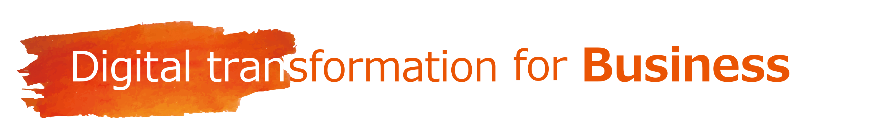

Sustainable contributions to society with web3.
Through creating new businesses in four focus areas:
“Urban concentration and regional decline”, “Low-carbon/decarbonization”, “Financial inclusion”, and “Health concerns”,
we aim not only to solve social issues but eventually to achieve sustainable contributions to society through DAOs.
We also contribute to co-creation businesses with everyone who is working in the same focus areas.

Digital transformation for business
We provide total support for those who want to use web3 to grow their businesses with the following services.
-
Web3 business consulting
Support for planning and developing web3-based business models.
-
Web3 technology consulting
Proposing optimal web3 technologies and advice according to our customer's needs.
-
Web3 system development and support
System development and support using fungible tokens, non-fungible tokens, etc.
System development and support using blockchain technology.
-
Web3 internal penetration support
Help for those who are struggling to obtain internal understanding and cooperation on web3 adoption and transformation.
Providing support for private study sessions, non-fungible and fungible token trials, employee education,
ideathon/hackathon planning, etc.
We all challenge ourselves to improve our web3 capabilities.
At TIS, we not only participate in web3 study sessions, ideathons, and hackathons from management to employees
but also provide many opportunities to gain familiarity with web3 through hands-on use,
such as web3 trial sessions using fungible tokens and non-fungible tokens,
digital badges for proof of participation in training and events, etc.
We aim to raise the knowledge level of our entire organization, transform our own company,
and continue to challenge ourselves to grow as individuals.